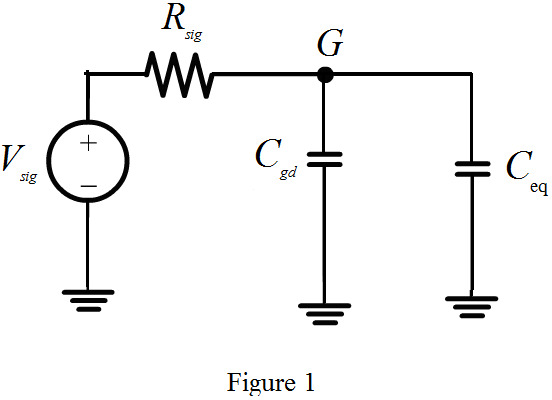

Now the time constant is,
Write the expression for the 3-db frequency.

Substitute the corresponding expression.
Therefore, the 3-db frequency expression is, .
Refer to Figure 9.32(b) in the textbook for the simplified equivalent circuit.
Apply the Miller’s approximation to the equivalent circuit in the Figure 9.32(b) to split the capacitance at the input side and the output side of the circuit. The resulting input equivalent circuit is shown in Figure 1.

The capacitance at the input side is,
The capacitance at the output side is,
The equivalent capacitance, . Here, the gain of gate to source is . The expression,
Now the simplified equivalent capacitance is,
Hence, the expression for the equivalent capacitance is, .
From the Figure 1, it is observed that the input capacitance is,
Substitute
Hence, the capacitance at the input side is, .
Now the time constant is,
Write the expression for the 3-db frequency.
Substitute the corresponding expression.
Therefore, the 3-db frequency expression is, .
Refer to Figure 9.32 (b) and (c) in the textbook for the equivalent circuit of source follower circuit. The resistance  seen by capacitance
seen by capacitance  is,
is,
The 3-dB frequency of the source follower is,
Here,
The time constant is,
Substitute for  in the expression of time constant.
in the expression of time constant.
Here,
When the resistance is small, then the resistance  is also small. So, neglect the terms related with
is also small. So, neglect the terms related with  and
and  .
.
Therefore, the modified expression for is,
Now, the 3-dB frequency of the source follower based on open circuit time constant is,
Therefore, the estimation of 3-dB frequency using Miller’s theorem is higher than that obtained from the method of open circuit time constant since it neglect the contribution of load capacitance  to time constant.
to time constant.
Consider the 3-dB frequency.

Thus in the denominator, the additional terms are and. This phenomenon results decrease in time constant and increase in 3- dB frequency.
Thus, the frequency estimate based on is higher than the frequency based on time constant.